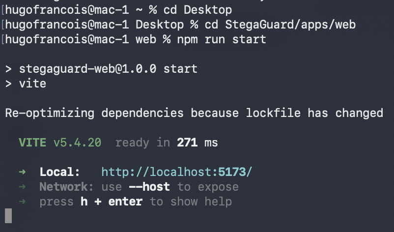

Überblick
StegaGuard ist ein kleines Werkzeug zur Analyse von URLs auf unsichtbare Zeichen, Unicode-Homographen und gemischte Schriftsysteme, die Nutzer täuschen können. Ziel ist nicht der Anspruch auf perfekte Erkennung, sondern das Experimentieren in einem Sicherheitsbereich, in dem kleinste Unterschiede auf Zeichenebene entscheidend sein können.
Lokale Ausführung
StegaGuard läuft vollständig lokal: Analysierte URLs werden nicht an einen entfernten Dienst gesendet, und die Anwendung kann ohne Backend-Deployment getestet werden.

npm run start.Funktionsweise
- Unsichtbare Zeichen wie Zero-Width-Spaces, Separatoren und Steuerzeichen.
- Unicode-Homographen: visuell ähnliche Buchstaben aus unterschiedlichen Alphabeten.
- Gemischte Schriftsysteme wie Latein, Griechisch und Kyrillisch.
- Ungewöhnliche Symbole in ansonsten normalen URLs.
Bei verdächtigem Verhalten zeigt die Oberfläche entweder eine Warnung oder einen klaren Alarm, damit der Link vor dem Anklicken bewusst geprüft wird.
Video-Demonstration
Interpretation der Ergebnisse
Die aktuelle Testseite zeigt 33 % „Precision“, weil Warnungen weder als vollständiger Erfolg noch als Fehler gezählt werden. Im im Projekt dokumentierten Testset wurde keine gefährliche URL übersehen und alle verdächtigen Zeichen wurden erkannt. Warnungen stellen Graubereiche dar, keine verpassten Fälle.
Lernerfahrungen
Das Projekt vertiefte mein Verständnis von Homoglyph-Angriffen, unsichtbaren Zeichen und Unicode-Manipulation in URLs. Gleichzeitig sammelte ich Erfahrung mit lokaler Analyse, einfacher UI-Logik und der verständlichen Darstellung von Sicherheitsresultaten.